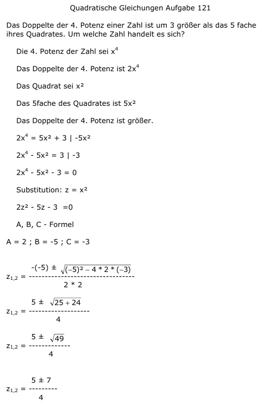

Aufgabe 121 Das Doppelte der 4. Potenz einer Zahl ist um 3 größer als das 5fache ihres Quadrates. Um welche Zahl handelt es sich? Die 4. Potenz der Zahl sei x4 Das Doppelte der 4. Potenz ist 2x4 Das Quadrat sei x2 Das 5fache des Quadrates ist 5x2 Das Doppelte der 4. Potenz ist größer. 2x4 = 5x2 + 3 | -5x2 2x4 - 5x2 = 3 | -3 2x4 - 5x2 - 3 = 0 Substitution: z = x2 2z2 - 5z - 3 =0 A, B, C - Formel A = 2 ; B = -5 ; C = -3  5 ± 7 z1,2 = -------- 4 5 + 7 12 z1 = -------- = ---- = 3 4 4 5 - 7 2 z2 = ------- = - --- = - 0,5 4 4 keine Lösung, aus einer negativen Zahl lässt sich keine Quadratwurzel ziehen Rücksubstitution: z = x2 3 = x2 |√ x1,2 = ± 1,73